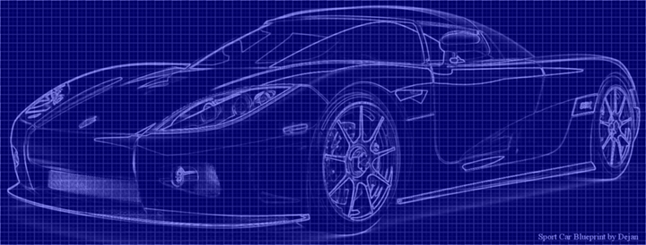

Database free
Application

By Ido Kanner
* F(P)un intendedAbout Me
My name is Ido, I'm an IT developer (aka devops), and a business owner named LINESIP
Design a dumb system
for a smart world

I know, it's not Homer Simpson ...
Database free application ?!
- An idea on breaking things into specific tasks
- Thinking on what is important, and what is not